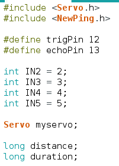
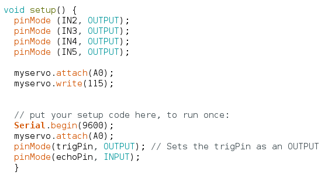
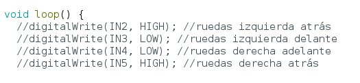
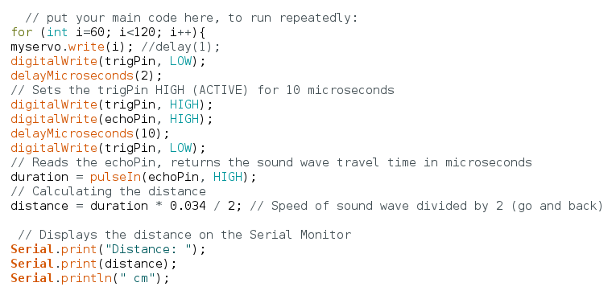
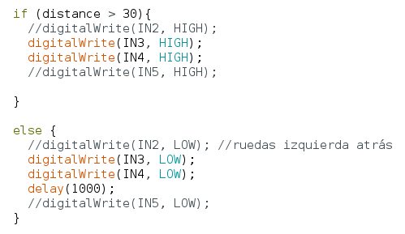
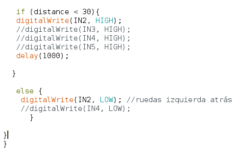

Explicación del codigo:
Primero de todo hay que añadir las librerias de Servo.h y NewPing. Los siguiente definir los pines del servo y de los motores.

En el void setup indicamos que esta fución será de salida.

En el void loop definir que ruedas van hacia delandete y hacia atrás pero todo comentado.

Indicamos que el sensor del servomotor tortará de los 60 a los 120 grados. Y que detecte los objetos.

Le indicamos al código que cuando no detecte ningún objeto a menos de 30 cm que vaya hacia delante si no que retroceda.

Indicamos que cuando detecte un objeto a 30 cm o menos las ruedas de la izquierda vayan hacia atrás y las de la derecha que se queden quietas.
